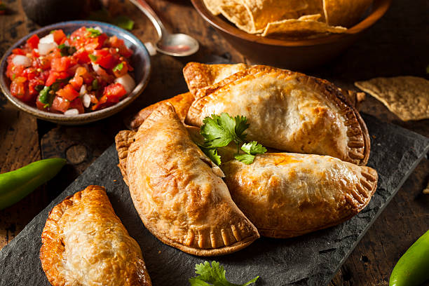

Empanadas de Carne Cortada a Cuchillo
Nuestras empanadas se preparan con carne de res cortada a cuchillo, cebolla caramelizada, pimiento morrón, huevo duro, aceitunas y un toque de comino que les da su sabor característico. La masa es hojaldrada casera, elaborada con harina, manteca y un poco de vino blanco para mayor textura. Cada empanada se sella a mano con el clásico repulgue criollo y se hornea hasta quedar dorada y crujiente. ¡Se sirven humeantes acompañadas de salsa chimichurri picante!
